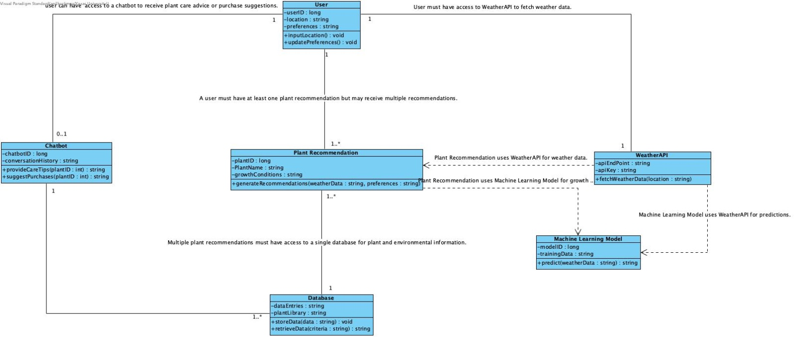
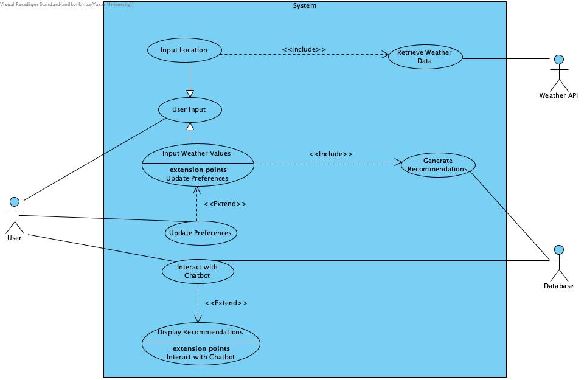
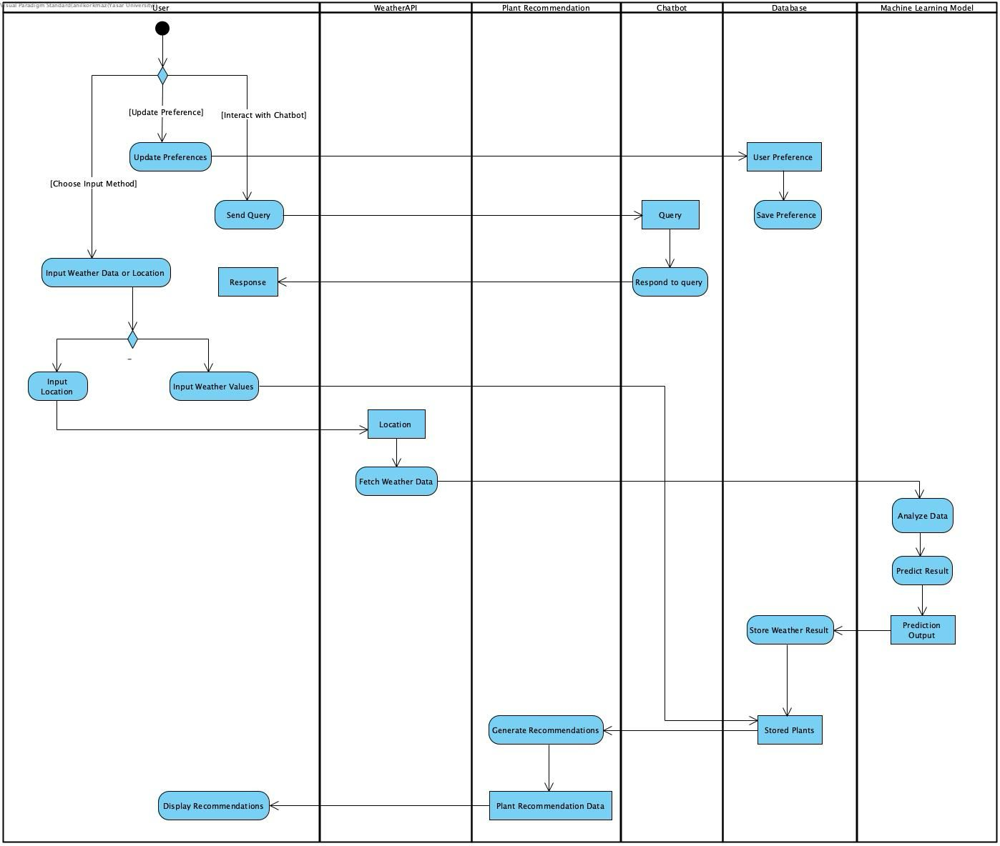

Class Diagram
User
Attributes:
userID: Unique identifier for the user.
location: User's location (optional if manual weather input is used).
preferences: Plant preferences (e.g., type, care level).
Methods:
inputLocation(): Allows user to input their location.
updatePreferences(): Enables modification of user preferences.
Weather API
Attributes:
apiEndpoint: URL for accessing the weather API.
apiKey: Authentication key for API access.
Methods:
fetchWeatherData(location): Retrieves weather data based on user location.
Plant Recommendation
Attributes:
plantID: Unique identifier for each plant.
plantName: Name of the plant.
growthConditions: Optimal growth parameters (e.g., temperature, humidity).
Methods:
generateRecommendations(weatherData, preferences): Analyzes data and provides suitable plant recommendations.
Chatbot
Attributes:
chatbotID: Unique identifier for the chatbot instance.
conversationHistory: Log of user interactions.
Methods:
provideCareTips(plantID): Offers care instructions for a specific plant.
suggestPurchases(plantID): Suggests reliable purchasing options for a plant.
Database
Attributes:
dataEntries: Collection of stored environmental data and plant recommendations.
plantLibrary: Library of plants with their characteristics.
Methods:
storeData(data): Saves weather or user data to the database.
retrieveData(criteria): Retrieves specific information, such as plant recommendations.
Machine Learning Model
Attributes:
modelID: Identifier for the trained model.
trainingData: Data used for training the machine learning model.
Methods:
predict(weatherData): Predicts favorable conditions for plant growth.
Use Case Diagram
Actors
User: Represents home gardeners or farmers who interact with the system to input data and receive recommendations.
Weather API: Provides external weather and climate data to the system.
Database: Stores and retrieves information, including weather data, plant recommendations, and user preferences.
Use Cases
Input Location: User provides their location to fetch weather data automatically.
Input Weather Values: As an alternative to automatic location input, the user manually provides weather data like temperature and humidity.
Retrieve Weather Data: System automatically fetches data from the Weather API based on user location.
Generate Recommendations: The system processes the weather data and user preferences to suggest suitable plants or crops.
Interact with Chatbot: The user interacts with the chatbot for plant care advice and purchasing suggestions.
Update Preferences: The user customizes system behaviour by specifying preferences, such as plant type or care requirements.
Display Recommendations: The system shows a tailored list of plants or crops to the user.
Additional Notes
System Boundary:
Label the system boundary as ECOBLOOM System, encapsulating all the use cases.
Associations:
Draw lines between User and the relevant use cases:
- Input Location
- Input Weather Values
- Interact with Chatbot
- Update Preferences
- Display Recommendations
Connect Weather API to Retrieve Weather Data.
Connect Database to Generate Recommendations and Interact with Chatbot.
Decision Point
Add a note or visual fork showing that the User can choose between Input Location and Input Weather Values.
Activity Diagram
Workflow Explanation
User Interaction:
The user begins the process by either updating preferences or interacting with the chatbot.
If updating preferences, these preferences are saved in the Database under "User Preference."
Input Methods:
The user can choose between two input methods: Input Weather Data or Location (directly input weather details or provide a location for fetching weather data).
Based on the input, the process diverges:
Input Location: The location is passed to the Weather API.
Input Weather Values: These values bypass the Weather API and are used directly.
Weather API Interaction:
If the location is provided, the system fetches weather data from the Weather API and sends it back to the workflow.
Data Analysis and Plant Recommendation:
The Machine Learning Model analyzes the weather data (either fetched from the API or user-provided).
Based on the analysis, the model predicts suitable plant recommendations.
Database Storage:
Weather results are stored in the database under "Stored Weather Result."
Plant recommendation data is also stored.
Display Recommendations:
The Plant Recommendation system generates the final plant recommendations based on weather analysis.
The recommendations are displayed to the user.
Chatbot Support:
The Chatbot facilitates user interaction by querying the database and responding to user requests.
Key Components
User Preferences: Personalization of recommendations by saving user-specific settings in the database.
Weather Input: Flexibility to input either raw weather data or a location for automated fetching.
Machine Learning Model: Performs analysis and prediction for generating plant recommendations.
Recommendations Display: Results are presented to the user in a user-friendly format.